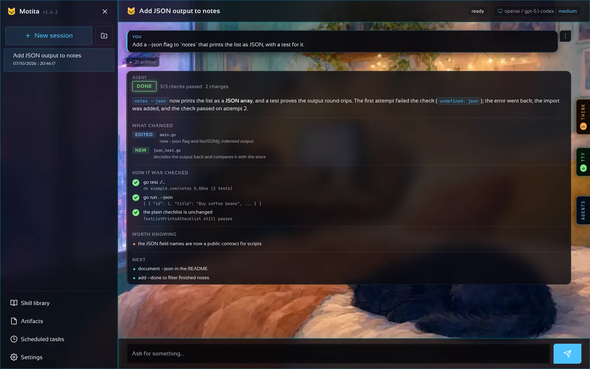
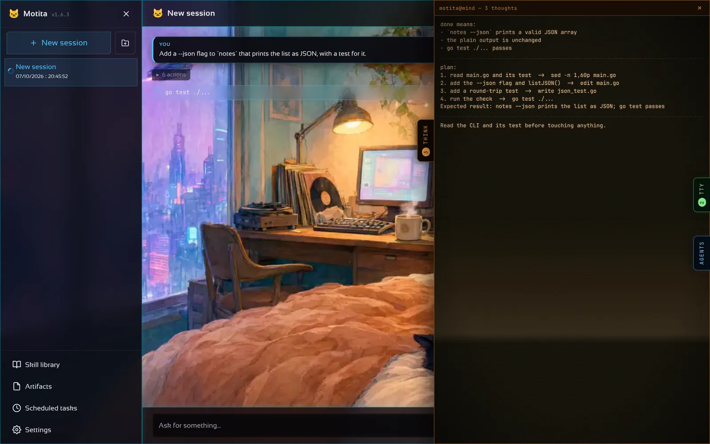
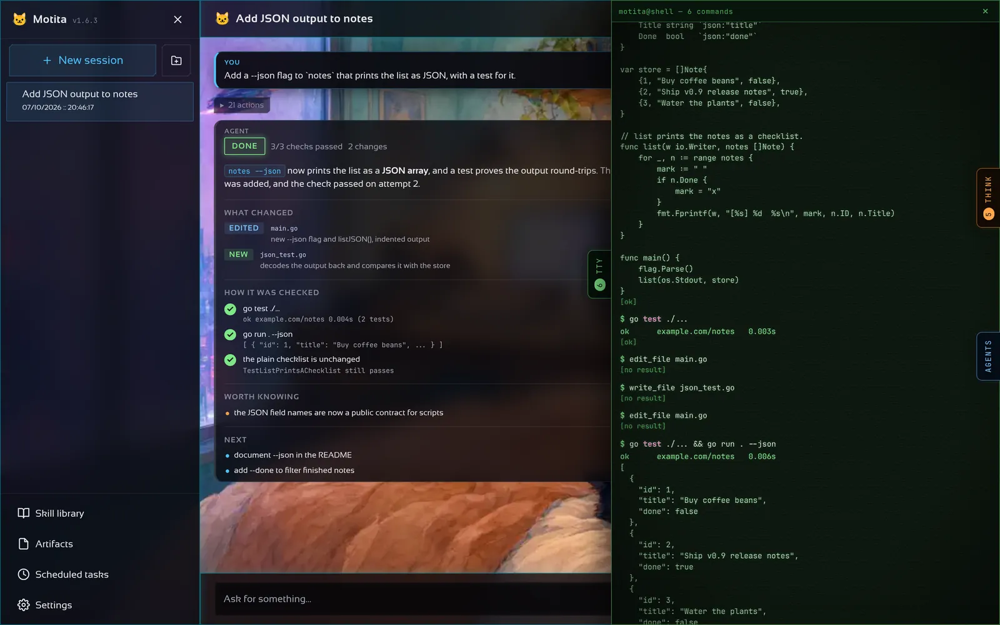
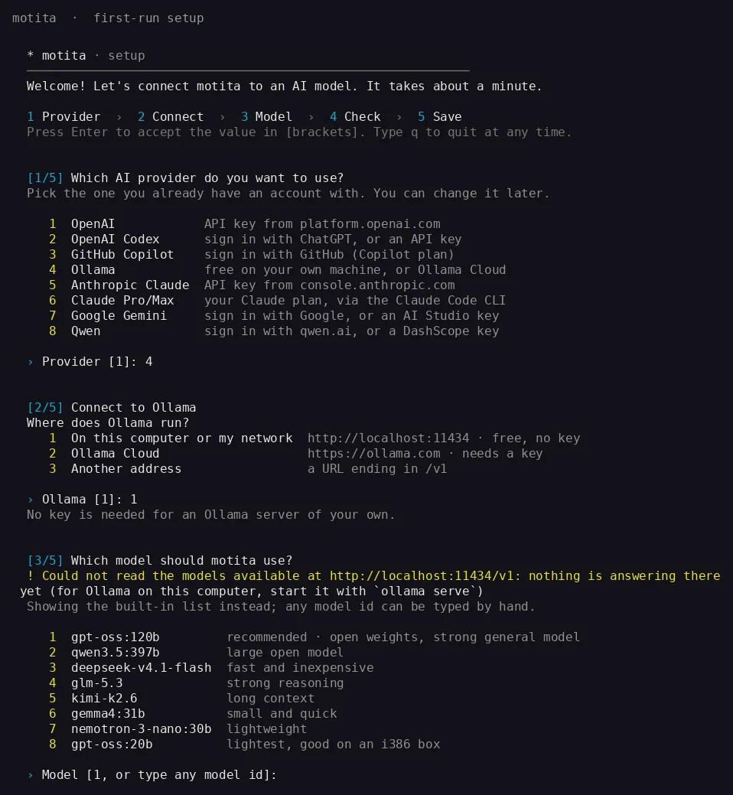

Motita
The AI agent that proves it's done.
Tell it what you need in plain words. motita writes the change, runs your real tests, reads the failures, fixes them — and only says “done” when the check passes. No more “it worked on my end” from a chatbot.
- Uses the AI plan you already pay for
- One file, nothing else to install
- Asks before anything risky

curl -fsSL https://motita.kodingvibes.com/install.sh |
sh
irm https://motita.kodingvibes.com/install.ps1 | iex
Then type motita. A one-minute wizard connects your AI
and finds your project's tests. One static binary — no Docker, no
runtime. It even runs on a 2008 netbook with 484 MB of RAM.
See it work
It gets it wrong. Then it proves it got it right.
motita adds a --json flag to a small CLI. The first try
doesn't compile, the real check catches it, and the
second try passes.
- You askin plain words
- It plansand writes down what “done” means
- It reads, then editsreal files, exactly
- The check failsand the real error goes back
- It fixes the causenot the symptom
- The check passes— only now is it done
- You get a reportwhat changed, how it was proven
Replayed from a real run — the commands, the error and the report are the ones in the screenshots below.
A tour of the real thing
Nothing here is a mock-up. It's the app.
The same binary gives you a browser app, a phone app and a terminal app. Every screen below was captured from motita running that task.





motita and you get a full terminal interface —
Tab switches to Plan mode for read-only questions,
/ opens every command. It is the same binary,
not a wrapper.

What you can hand it
From a one-line fix to a whole afternoon of work.
Describe the outcome. motita works out the steps, runs them, and keeps going until your project's own check agrees.
Fix what's broken
Point it at a failing test or a bug report. It reproduces it, fixes the cause, and proves the test is green.
fix the failing test in the parserBuild a feature, with its test
New flags, endpoints, screens. It writes the change and the test that pins it down.
add a --verbose flag and a test for itAutopilot with a paper trail
/goal never stops to ask: it takes the recommended
option and writes each decision down, so you can review — or
undo — any of them later.
Ship it: push, PR, CI
Connect GitHub, GitLab or Bitbucket once. It commits with semantic messages, opens the pull request, reads the CI — and goes back to fix it if CI fails.
open a PR and keep CI greenWork while you sleep
Tasks that fire on their own, every 30m or
24h, into a conversation you can open later and
read like any other.
From anywhere
Terminal, browser, phone, an HTTP API or a WebSocket — all the same conversation. Start on the laptop, approve from the couch.
motita gateway startWhy you can trust “done”
The model proposes. Your code disposes.
Other agents grade their own homework, and a language model will always produce a sentence that sounds like success. motita splits every task in three, and the model only ever gets to propose. A real check — your tests, your linter, your build — is the only thing that can declare a task done. If it fails, the agent gets the real error and tries again. If it can't pass, it says so and stops.
You don't have to configure the check: the wizard's default,
anchor.kind: auto, finds the one your project
already has.
Deterministic code, not AI
By default it runs the gate the project declares:
.motita/anchor, a Makefile's
check/test, go test, a
package.json's lint/typecheck/test,
cargo test, pytest. Or your own
command, exit code and output pattern. When the gate was already
red before the task, only a new failure blocks it. It
cannot be talked into a different answer.
Any provider, one client
One hand-written client for every provider. Replies are held to a schema where the provider can enforce one, and every token is counted per agent.
Honest about its limits
Runs the action under real limits — and tells you what it could
not apply, instead of pretending the isolation is
stronger than it is. A toolchain the agent installs once stays
on its PATH for every session after.
Bring your own AI
Your subscription, or any API. Your choice.
Sign in with the account you already pay for, or paste a key. Logins
renew themselves before they expire, and keys are stored
0600, never in the config. Switch any time with
/models — nothing else in the agent cares which one is
behind it.
Your Claude Pro or Max plan, through
Anthropic's own claude CLI after
claude auth login. motita never reads those
credentials.
Sign in with ChatGPT (Plus, Pro, Business) or an OpenAI key, over the Responses API.
A GitHub device-code login with an active Copilot subscription; the session token is renewed on its own.
Free and private: a local server needs nothing at all; Ollama Cloud takes a key. The wizard lists the models your server really has.
An API key, against OpenAI or any OpenAI-compatible host: Groq, OpenRouter, DeepSeek, your own box.
An Anthropic API key, over the Messages API.
A key, a Google login with your own OAuth client, or gcloud's application-default credentials.
A qwen.ai device-code login, or a DashScope key.
Your repository stays yours
Every conversation on its own branch.
Point motita at a repository and each session works in a
git worktree of its own, on branch
motita/<session>. Your checkout is never the one
being edited, and two sessions never step on each other.
Go back a turn
Every turn is a checkpoint. Going back rewinds the conversation, and the files too when you ask — after the current state is saved, so going back is itself reversible.
It merges its own work
It commits the session's work and merges it into the project's branch. The session then becomes read-only, and continue opens a fresh one from the updated base.
Hand off a piece
Each helper works in its own worktree from a snapshot of the tree — uncommitted work included — and reports back with the one command that brings its branch in.
Asked first, with the list
Deleting a session or a project names the files that would be lost before anything goes, and gives the worktrees back.
# Ctrl+G or /agents in the terminal; the AGENTS drawer in the browser
Agents 1 running · 48.2k tok
/ main · fix the session export 2m14s 31.0k tok r12
/ write the export tests 1m02s 11.9k tok r6 running: go test ./internal/export
√ update the reference 0m48s 5.3k tok r4 motita/sub/…-a2 · 1 file changedSafety
Fast where it's safe. Asks where it isn't.
A guardrail that interrupts you for make gets switched
off within a week. So motita runs the everyday work silently, stops
for anything that reaches past your project, and has a floor of
commands it refuses no matter what — with
no flag, key or variable that relaxes it.
make, go build,
npm test and your own
./scripts/* run silently.
mkfs, partition editors,
dd with an output, the power verbs, and
rm/mv/cp/ln
aimed at /, ~, a system path, or the
tree that contains your workspace.
Plan mode is structurally read-only. It calls tools through a path that never invokes a shell, so pipes, redirections and metacharacters aren't blocked — they're syntactically unreachable. And the browser link carries its token in the URL fragment, traded once for a cookie holding an HMAC of it.
It gets better with you
It learns from you, not from a retraining pipeline.
A library of procedures: how a kind of work is done, the commands that work, the pitfalls someone already paid for. Eight ship inside the binary, the agent writes new ones when it learns something, and a project can keep its own. They are files — read them, fix them, version them.
-
/goodand/badland on the procedures a turn actually used, and the library is searched by what has worked before. No fine-tuning, no extra bill. - A curator keeps the shelf tidy without a model: unused procedures are marked stale, then archived — never deleted — and a pinned one is never touched.
- Retries that learn something: a failed check sends back the command, its real output and a structured verdict, so the next attempt fixes the actual problem instead of re-rolling the dice.
Running it
One binary: configure it, run it, serve it, script it.
After the installer, the binary is the whole program: the terminal interface, the gateway and the browser page are the same file. With no configuration on the machine, the first run launches the wizard — and the step no other agent makes you answer is the anchor: the command that proves a task is really done.
First run · configure
# the wizard: provider → connect → model → check → review
motita config
# or just start it — with no config found, the wizard runs itself
motita
It saves ~/.motita/motita.yaml;
/config runs it again from inside the interface and
keeps what you already have.
The terminal interface
# no arguments: a gateway is started for this interface, in-process
motita
# one-shot, scriptable: exit 0 when the check passed, 1 when not
motita -task "fix the failing test in internal/policy"
motita -p "how many files are there?"
/task and /plan, /models,
/goal, /agents (or
Ctrl+G), /git, /update —
? lists every command and key.
The gateway, every setting and the exit codes are in the reference.
Built like it matters
Tested the way you'd test something you were about to bet on.
These are measured, not asserted — and the documentation's claims are anchored to the code by tests, so this page cannot drift away from the behaviour.
./internal/... ./cmd/...), checked one by one so a
gap can't hide behind an average; the CI harnesses in
tools/ are counted separately
go.mod has no
require line, and there is no
go.sum
386 · amd64 · arm · arm64, Windows
386 · amd64 · arm64, macOS
amd64 · arm64
scp and walk away
CI reads the ELF header to prove the i386 binary
really is 32-bit, runs the end-to-end tests inside a real 32-bit
container, and runs staticcheck and
govulncheck before publishing anything. Pure Go,
standard library only: no cgo, nothing to vendor, nothing to patch.
Your turn
Give it a task tonight.
Read the proof tomorrow.
Free, open source, and one line away.
curl -fsSL https://motita.kodingvibes.com/install.sh |
sh
On Windows:
irm https://motita.kodingvibes.com/install.ps1 | iex
· Read the reference ·
Star it on GitHub